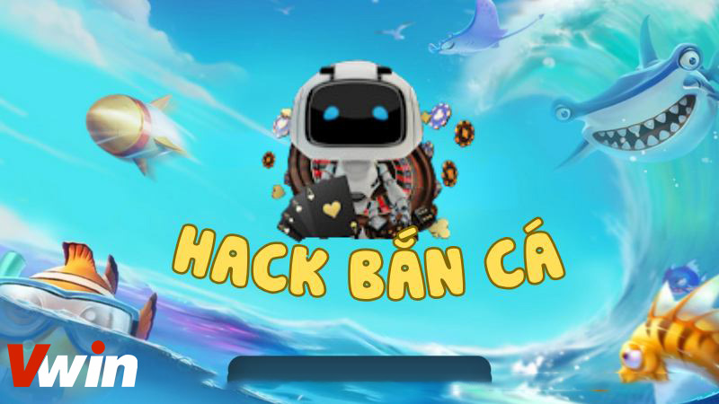
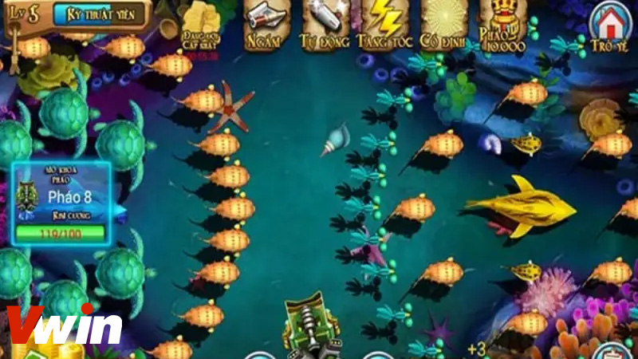
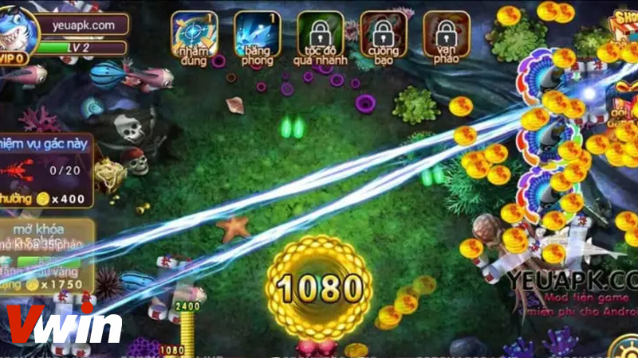

.png)
ĐÃ ĐĂNG TRÊN THÁNG BA 1, 2024 BỞI Vwin
Chắc chắn rằng thuật ngữ hack game bắn cá đã trở nên quen thuộc với cộng đồng ngư thủ. Tuy nhiên, không phải ai cũng thành công khi thực hiện các phương pháp này. Đừng lo lắng, bởi Vwin đã chia sẻ những thủ thuật hack bắn cá đổi thưởng độc đáo và hiệu quả, giúp bạn nâng cao khả năng chiến thắng. Hãy thử áp dụng ngay để tận hưởng trải nghiệm chơi game tốt hơn!
Hack game bắn cá không chỉ đơn giản là việc tận dụng những lỗ hổng có sẵn trong trò chơi, mà còn là một nghệ thuật tinh tế đòi hỏi sự tinh mắt và khéo léo từ người chơi. Trên thị trường, có không ít phần mềm hack được coi là đáng tin cậy và hiệu quả, giúp người chơi tiếp cận với những trải nghiệm chơi game mới mẻ.
Khám phá chi tiết hack bắn cá đổi thưởng
Tuy nhiên, việc hack bắn cá đổi thưởng không chỉ là việc tải xuống và cài đặt một số thao tác. Nó còn đòi hỏi sự hiểu biết sâu rộng về cách hoạt động của trò chơi cũng như khả năng tìm kiếm và tận dụng mọi cơ hội có thể.
Để đạt được mục tiêu, người chơi có thể thử áp dụng một số phương pháp hack đa dạng, từ hack tiền vàng đến hack thời gian chơi, và nhiều hơn nữa.
Khi cân nhắc về việc hack game bắn cá, có nhiều lý do mà người chơi có thể xem xét trước khi quyết định áp dụng. Dưới đây là một số ưu điểm cụ thể mà bạn có thể nhận được:
Trong thế giới dưới đại dương, tồn tại một loạt các loài cá với kích thước và hình dạng đa dạng. Mỗi loài cá đều yêu cầu một loại vũ khí và mức đạn khác nhau. Trong trò chơi bắn cá, việc sở hữu đủ loại đạn có thể là một thách thức đối với người chơi.
Tuy nhiên, sử dụng kỹ thuật hack bắn cá đổi thưởng có thể giúp bạn có được nhiều đạn mà không cần phải chi tiêu một khoản tiền nào. Điều này giúp bạn tiêu diệt các loài cá một cách hiệu quả hơn.
Bắn cá là một trò chơi dễ chơi nhưng không phải ai cũng biết cách giành chiến thắng. Việc áp dụng các công cụ hack bắn cá đổi thưởng có thể tăng cơ hội thắng của bạn và giúp bạn tránh được những cạm bẫy trong trò chơi.
Sử dụng các phần mềm hack bắn cá đổi thưởng có thể giúp bạn kiếm được số tiền thưởng lớn hơn so với việc chơi bình thường. Nhiều người đã thực hiện điều này và đạt được những khoản tiền thưởng đáng kể mà không cần dành quá nhiều thời gian.
Tuy nhiên, nếu bạn chơi game bắn cá chỉ để giải trí, không nên sử dụng các công cụ hack vì điều này có thể làm mất đi tính giải trí của trò chơi. Hầu hết những người sử dụng công cụ hack bắn cá đều muốn kiếm tiền thưởng mà không cần quá nhiều kinh nghiệm hoặc kiến thức về trò chơi.
Ngày nay, có vô số bí quyết hack game bắn cá đổi thưởng mà người chơi có thể sử dụng để đạt được kết quả ấn tượng. Dưới đây là một số kỹ thuật phổ biến mà bạn có thể tham khảo:
Một trong những cách chơi game bắn cá mà hiệu quả và thuận tiện nhất là sử dụng các công cụ phần mềm. Đây là lựa chọn được rất nhiều người chơi ưa chuộng. Chỉ cần chọn ra phần mềm phù hợp và tải về thiết bị của mình, người chơi có thể bắt đầu trải nghiệm ngay.
Sau khi cài đặt thành công, việc kết nối với mạng internet ổn định là quan trọng để có thể hack game một cách dễ dàng. Với việc sử dụng các phần mềm này, người chơi sẽ trở nên vô cùng mạnh mẽ trong việc tiêu diệt các loại cá và thu được những phần thưởng giá trị.
Công cụ hack bắn cá đổi thưởng không gây ra sự giảm tốc độ truyền tải, cho phép người chơi yên tâm tải về và sử dụng trên cả điện thoại di động và máy tính.
Việc sử dụng các công cụ hack giúp người chơi dễ dàng tiêu diệt các loại cá khác nhau và sở hữu những loại vũ khí hiện đại. Bằng cách tăng số lượng đạn, pháo, đại bác và boom miễn phí, người chơi có thể dễ dàng đối phó với những con cá khổng lồ một cách dễ dàng.
Ngoài việc sử dụng các công cụ hack để tăng cơ hội thắng trong game bắn cá, người chơi cũng có thể áp dụng một chiến thuật khác để nắm bắt cơ hội chiến thắng. Một trong những chiến thuật đó là quan sát tốc độ di chuyển của các loại cá, một phương pháp đã được rất nhiều người chơi áp dụng và đạt được kết quả khả quan.
Sử dụng chiến thuật quan sát tốc độ di chuyển của cá
Ngay khi bước vào sảnh game, việc đầu tiên mà người chơi cần làm là nạp đạn ngay lập tức. Tiếp theo, họ cần lựa chọn mức cược phù hợp và liên tục bắn nã vào màn hình. Điều này giúp họ có thể tiêu diệt các con cá di chuyển theo hướng đã dự đoán trước đó.
Khi thực hiện chiến thuật này, người chơi cần lưu ý rằng các loại cá khác nhau sẽ có tốc độ di chuyển khác nhau. Thường thì, các con cá lớn sẽ di chuyển nhanh hơn so với các con cá nhỏ. Do đó, để bắn trúng các con cá lớn, người chơi cần phải quan sát kỹ lưỡng và có thể kết hợp với việc sử dụng các công cụ hack trong game bắn cá để tăng khả năng chiến thắng.
Một chiến thuật hiệu quả trong việc chơi game bắn cá là tận dụng các góc tường để tăng khả năng gây sát thương. Bằng cách bắn đạn vào các góc tường trong trò chơi, người chơi có thể tận dụng hiệu ứng dội ngược của viên đạn, từ đó tạo ra cơ hội để bắn nhiều đạn hơn vào mục tiêu. Kết quả là, việc có hai viên đạn nhằm vào mục tiêu sẽ tăng cơ hội tiêu diệt nó.
Chiến thuật tận dụng góc tường để hạ gục mục tiêu
Chiến thuật này thích hợp khi các con cá đang bơi gần các góc tường, vì việc bắn đạn sẽ tạo ra hiệu ứng dội ngược mạnh mẽ nhất. Tuy nhiên, nó không hiệu quả khi áp dụng vào các con cá đang bơi ở xa, vì hiệu ứng dội ngược sẽ giảm đi đáng kể khi viên đạn đi xa hơn. Đây là một trong những chiến thuật thông minh mà người chơi có thể áp dụng để tăng khả năng chiến thắng trong game bắn cá.
Chiến thuật này đơn giản là bắn ngay lập tức những con cá mới vừa xuất hiện trên bàn chơi. Các thợ săn chỉ cần ngồi sẵn, điều chỉnh súng và chờ đợi con mồi mới xuất hiện để bắn ngay lập tức. Để thực hiện được chiến thuật này, người chơi cần phải tập trung cao độ và điều chỉnh súng một cách chính xác, bắn nhanh chóng.
Việc kết hợp cả hai thủ thuật này đòi hỏi người chơi phải có kinh nghiệm và kỹ năng cao. Có nhiều người chơi lâu năm đã thành thạo việc áp dụng cả hai chiến thuật này cùng một lúc, từ đó tăng hiệu quả khi chơi game bắn cá.
Vậy là chúng ta đã cùng nhau tìm hiểu về các thông tin liên quan đến việc hack bắn cá đổi thưởng. Có thể thấy rằng, hack game bắn cá mang lại những ưu điểm nhất định, nhưng cũng đi kèm với những rủi ro tiềm ẩn. Qua đó, mọi người có thể tham khảo và tự đánh giá để rút ra những kiến thức hữu ích và quyết định xem liệu họ nên sử dụng phương pháp này hay không. Chúc mừng mọi người thành công trong trải nghiệm của mình!
Vwin được công nhận là nhà cái cá cược hợp pháp - an toàn. Vwin còn có trụ sở chính và cá cược trực tiếp tại Phú Quốc.